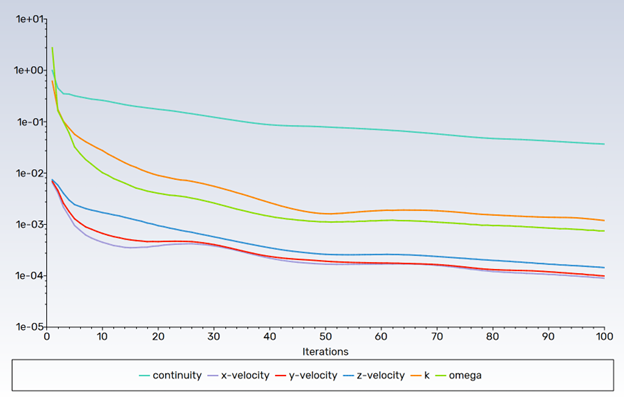
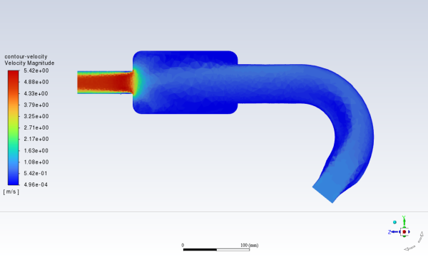

Note
Click here to download the full example code
Fault-tolerant meshing workflow#
This example sets up and solves a three-dimensional turbulent fluid flow in a manifold exhaust system, which is common in the automotive industry. Predicting the flow field in the area of the mixing region is important to designing the junction properly.
This example uses the guided workflow for fault-tolerant meshing because it is appropriate for geometries that can have imperfections, such as gaps and leakages.
Workflow tasks
The fault-tolerant meshing workflow guides you through these tasks:
Import a CAD geometry and manage individual parts
Generate a surface mesh
Cap inlets and outlets
Extract a fluid region
Define leakages
Extract edge features
Set up size controls
Generate a volume mesh
Problem description
In the manifold exhaust system, air flows through the three inlets with a uniform velocity of 1 m/s. The air then exits through the outlet. A small pipe is placed in the main portion of the manifold where edge extraction is considered. The example also includes a known small leakage to demonstrate the automatic leakage detection aspects of the meshing workflow.
# sphinx_gallery_thumbnail_path = '_static/exhaust_system.png'
Example Setup#
Before you can use the fault-tolerant meshing workflow, you must set up the example and initialize this workflow.
Perform required imports#
Perform required imports, which includes downloading and importing the geometry file.
import ansys.fluent.core as pyfluent
from ansys.fluent.core import examples
import_filename = examples.download_file(
"exhaust_system.fmd", "pyfluent/exhaust_system"
)
Launch Fluent#
Launch Fluent as a service in meshing mode with double precision running on two processors.
meshing = pyfluent.launch_fluent(precision="double", processor_count=2, mode="meshing")
Initialize workflow#
Initialize the fault-tolerant meshing workflow.
meshing.workflow.InitializeWorkflow(WorkflowType="Fault-tolerant Meshing")
True
Fault-folerant meshing workflow#
The fault-tolerant meshing workflow guides you through the many tasks that follow.
Import CAD and manage parts#
Import the CAD geometry file (exhaust_system.fmd) and selectively manage some
parts.
meshing.PartManagement.InputFileChanged(
FilePath=import_filename, IgnoreSolidNames=False, PartPerBody=False
)
meshing.PMFileManagement.FileManager.LoadFiles()
meshing.PartManagement.Node["Meshing Model"].Copy(
Paths=[
"/dirty_manifold-for-wrapper," + "1/dirty_manifold-for-wrapper,1/main,1",
"/dirty_manifold-for-wrapper," + "1/dirty_manifold-for-wrapper,1/flow-pipe,1",
"/dirty_manifold-for-wrapper," + "1/dirty_manifold-for-wrapper,1/outpipe3,1",
"/dirty_manifold-for-wrapper," + "1/dirty_manifold-for-wrapper,1/object2,1",
"/dirty_manifold-for-wrapper," + "1/dirty_manifold-for-wrapper,1/object1,1",
]
)
meshing.PartManagement.ObjectSetting["DefaultObjectSetting"].OneZonePer.set_state(
"part"
)
meshing.workflow.TaskObject["Import CAD and Part Management"].Arguments.set_state(
{
"Context": 0,
"CreateObjectPer": "Custom",
"FMDFileName": import_filename,
"FileLoaded": "yes",
"ObjectSetting": "DefaultObjectSetting",
"Options": {
"Line": False,
"Solid": False,
"Surface": False,
},
}
)
meshing.workflow.TaskObject["Import CAD and Part Management"].Execute()
loading data from '/home/ans classifying 115 edge occurrences ...
classified 67 feature edge edges by feature angle
classified 0 single-connected edges as feature edge(s)
classified 0 multi-connected edges as feature edge(s)
classified 0 sheet edges as feature edge(s)
classified 0 wire edges as feature edge(s)
classified 10 feature edges by group criteria
processing 8 zones ...
post-processing 0 zones for feature edge extraction ...
classifying 2 edge occurrences ...
classified 1 feature edge edge by feature angle
classified 0 single-connected edges as feature edge(s)
classified 0 multi-connected edges as feature edge(s)
classified 0 sheet edges as feature edge(s)
classified 0 wire edges as feature edge(s)
classified 10 feature edges by group criteria
processing 5 zones ...
post-processing 0 zones for feature edge extraction ...
classifying 13 edge occurrences ...
classified 8 feature edge edges by feature angle
classified 0 single-connected edges as feature edge(s)
classified 0 multi-connected edges as feature edge(s)
classified 0 sheet edges as feature edge(s)
classified 0 wire edges as feature edge(s)
classified 10 feature edges by group criteria
processing 8 zones ...
post-processing 0 zones for feature edge extraction ...
classifying 13 edge occurrences ...
classified 8 feature edge edges by feature angle
classified 0 single-connected edges as feature edge(s)
classified 0 multi-connected edges as feature edge(s)
classified 0 sheet edges as feature edge(s)
classified 0 wire edges as feature edge(s)
classified 10 feature edges by group criteria
processing 8 zones ...
post-processing 0 zones for feature edge extraction ...
classifying 50 edge occurrences ...
classified 16 feature edge edges by feature angle
classified 0 single-connected edges as feature edge(s)
classified 0 multi-connected edges as feature edge(s)
classified 0 sheet edges as feature edge(s)
classified 0 wire edges as feature edge(s)
classified 10 feature edges by group criteria
processing 8 zones ...
post-processing 0 zones for feature edge extraction ...
"Meshing objects are created"
Describe geometry and flow#
Describe the geometry and the flow characteristics.
meshing.workflow.TaskObject["Describe Geometry and Flow"].Arguments.set_state(
{
"AddEnclosure": "No",
"CloseCaps": "Yes",
"FlowType": "Internal flow through the object",
}
)
meshing.workflow.TaskObject["Describe Geometry and Flow"].UpdateChildTasks(
SetupTypeChanged=False
)
meshing.workflow.TaskObject["Describe Geometry and Flow"].Arguments.set_state(
{
"AddEnclosure": "No",
"CloseCaps": "Yes",
"DescribeGeometryAndFlowOptions": {
"AdvancedOptions": True,
"ExtractEdgeFeatures": "Yes",
},
"FlowType": "Internal flow through the object",
}
)
meshing.workflow.TaskObject["Describe Geometry and Flow"].UpdateChildTasks(
SetupTypeChanged=False
)
meshing.workflow.TaskObject["Describe Geometry and Flow"].Execute()
True
Enclose openings#
Enclose (cap) any openings in the geometry.

{kind=link}
meshing.workflow.TaskObject["Enclose Fluid Regions (Capping)"].Arguments.set_state(
{
"CreatePatchPreferences": {
"ShowCreatePatchPreferences": False,
},
"PatchName": "inlet-1",
"SelectionType": "zone",
"ZoneSelectionList": ["inlet.1"],
}
)
meshing.workflow.TaskObject["Enclose Fluid Regions (Capping)"].Arguments.set_state(
{
"CreatePatchPreferences": {
"ShowCreatePatchPreferences": False,
},
"PatchName": "inlet-1",
"SelectionType": "zone",
"ZoneLocation": [
"1",
"351.68205",
"-361.34322",
"-301.88668",
"396.96205",
"-332.84759",
"-266.69751",
"inlet.1",
],
"ZoneSelectionList": ["inlet.1"],
}
)
meshing.workflow.TaskObject["Enclose Fluid Regions (Capping)"].AddChildToTask()
meshing.workflow.TaskObject["Enclose Fluid Regions (Capping)"].InsertCompoundChildTask()
meshing.workflow.TaskObject["Enclose Fluid Regions (Capping)"].Arguments.set_state({})
meshing.workflow.TaskObject["inlet-1"].Execute()
meshing.workflow.TaskObject["Enclose Fluid Regions (Capping)"].Arguments.set_state(
{
"PatchName": "inlet-2",
"SelectionType": "zone",
"ZoneSelectionList": ["inlet.2"],
}
)
meshing.workflow.TaskObject["Enclose Fluid Regions (Capping)"].Arguments.set_state(
{
"PatchName": "inlet-2",
"SelectionType": "zone",
"ZoneLocation": [
"1",
"441.68205",
"-361.34322",
"-301.88668",
"486.96205",
"-332.84759",
"-266.69751",
"inlet.2",
],
"ZoneSelectionList": ["inlet.2"],
}
)
meshing.workflow.TaskObject["Enclose Fluid Regions (Capping)"].AddChildToTask()
meshing.workflow.TaskObject["Enclose Fluid Regions (Capping)"].InsertCompoundChildTask()
meshing.workflow.TaskObject["Enclose Fluid Regions (Capping)"].Arguments.set_state({})
meshing.workflow.TaskObject["inlet-2"].Execute()
meshing.workflow.TaskObject["Enclose Fluid Regions (Capping)"].Arguments.set_state(
{
"PatchName": "inlet-3",
"SelectionType": "zone",
"ZoneSelectionList": ["inlet"],
}
)
meshing.workflow.TaskObject["Enclose Fluid Regions (Capping)"].Arguments.set_state(
{
"PatchName": "inlet-3",
"SelectionType": "zone",
"ZoneLocation": [
"1",
"261.68205",
"-361.34322",
"-301.88668",
"306.96205",
"-332.84759",
"-266.69751",
"inlet",
],
"ZoneSelectionList": ["inlet"],
}
)
meshing.workflow.TaskObject["Enclose Fluid Regions (Capping)"].AddChildToTask()
meshing.workflow.TaskObject["Enclose Fluid Regions (Capping)"].InsertCompoundChildTask()
meshing.workflow.TaskObject["Enclose Fluid Regions (Capping)"].Arguments.set_state({})
meshing.workflow.TaskObject["inlet-3"].Execute()
meshing.workflow.TaskObject["Enclose Fluid Regions (Capping)"].Arguments.set_state(
{
"PatchName": "outlet-1",
"SelectionType": "zone",
"ZoneSelectionList": ["outlet"],
"ZoneType": "pressure-outlet",
}
)
meshing.workflow.TaskObject["Enclose Fluid Regions (Capping)"].Arguments.set_state(
{
"PatchName": "outlet-1",
"SelectionType": "zone",
"ZoneLocation": [
"1",
"352.22702",
"-197.8957",
"84.102381",
"394.41707",
"-155.70565",
"84.102381",
"outlet",
],
"ZoneSelectionList": ["outlet"],
"ZoneType": "pressure-outlet",
}
)
meshing.workflow.TaskObject["Enclose Fluid Regions (Capping)"].AddChildToTask()
meshing.workflow.TaskObject["Enclose Fluid Regions (Capping)"].InsertCompoundChildTask()
meshing.workflow.TaskObject["Enclose Fluid Regions (Capping)"].Arguments.set_state({})
meshing.workflow.TaskObject["outlet-1"].Execute()
removed 128 faces.
64 boundary nodes.
0 faces removed.
---------------- Patching of inlet-1 complete.
removed 128 faces.
64 boundary nodes.
0 faces removed.
---------------- Patching of inlet-2 complete.
removed 128 faces.
64 boundary nodes.
0 faces removed.
---------------- Patching of inlet-3 complete.
removed 128 faces.
64 boundary nodes.
0 faces removed.
---------------- Patching of outlet-1 complete.
True
Extract edge features#
Extract edge features.
meshing.workflow.TaskObject["Extract Edge Features"].Arguments.set_state(
{
"ExtractMethodType": "Intersection Loops",
"ObjectSelectionList": ["flow_pipe", "main"],
}
)
meshing.workflow.TaskObject["Extract Edge Features"].AddChildToTask()
meshing.workflow.TaskObject["Extract Edge Features"].InsertCompoundChildTask()
meshing.workflow.TaskObject["edge-group-1"].Arguments.set_state(
{
"ExtractEdgesName": "edge-group-1",
"ExtractMethodType": "Intersection Loops",
"ObjectSelectionList": ["flow_pipe", "main"],
}
)
meshing.workflow.TaskObject["Extract Edge Features"].Arguments.set_state({})
meshing.workflow.TaskObject["edge-group-1"].Execute()
S_ExtractEdges:
ExtractEdgesName : edge-group-1
ExtractMethodType : Intersection Loops
SelectionType : object
ObjectSelectionList: (flow_pipe main)
GeomObjectSelectionList: ()
ZoneSelectionList: ()
ZoneLocation:()
LabelSelectionList : ()
FeatureAngleLocal : 40
IndividualCollective : collectively
SharpAngle : 110
Zone intersected-collectively-flow_pipe-main is copied to make objects independent
True
Identify regions#
Identify regions.
meshing.workflow.TaskObject["Identify Regions"].Arguments.set_state(
{
"SelectionType": "zone",
"X": 377.322045740589,
"Y": -176.800676988458,
"Z": -37.0764628583475,
"ZoneSelectionList": ["main.1"],
}
)
meshing.workflow.TaskObject["Identify Regions"].Arguments.set_state(
{
"SelectionType": "zone",
"X": 377.322045740589,
"Y": -176.800676988458,
"Z": -37.0764628583475,
"ZoneLocation": [
"1",
"213.32205",
"-225.28068",
"-158.25531",
"541.32205",
"-128.32068",
"84.102381",
"main.1",
],
"ZoneSelectionList": ["main.1"],
}
)
meshing.workflow.TaskObject["Identify Regions"].AddChildToTask()
meshing.workflow.TaskObject["Identify Regions"].InsertCompoundChildTask()
meshing.workflow.TaskObject["fluid-region-1"].Arguments.set_state(
{
"MaterialPointsName": "fluid-region-1",
"SelectionType": "zone",
"X": 377.322045740589,
"Y": -176.800676988458,
"Z": -37.0764628583475,
"ZoneLocation": [
"1",
"213.32205",
"-225.28068",
"-158.25531",
"541.32205",
"-128.32068",
"84.102381",
"main.1",
],
"ZoneSelectionList": ["main.1"],
}
)
meshing.workflow.TaskObject["Identify Regions"].Arguments.set_state({})
meshing.workflow.TaskObject["fluid-region-1"].Execute()
meshing.workflow.TaskObject["Identify Regions"].Arguments.set_state(
{
"MaterialPointsName": "void-region-1",
"NewRegionType": "void",
"ObjectSelectionList": ["inlet-1", "inlet-2", "inlet-3", "main"],
"X": 374.722045740589,
"Y": -278.9775145640143,
"Z": -161.1700719416913,
}
)
meshing.workflow.TaskObject["Identify Regions"].AddChildToTask()
meshing.workflow.TaskObject["Identify Regions"].InsertCompoundChildTask()
meshing.workflow.TaskObject["Identify Regions"].Arguments.set_state({})
meshing.workflow.TaskObject["void-region-1"].Execute()
S_MaterialPoints:
AddChild: yes
MaterialPointsName : fluid-region-1
MptMethodType : Centroid of Objects
NewRegionType : fluid
LinkConstruction : no
SelectionType : zone
ZoneSelectionList : (main.1)
ZoneLocation : (1 213.32205 -225.28068 -158.25531 541.32205 -128.32068 84.102381 main.1)
LabelSelectionList : ()
ObjectSelectionList : ()
GraphicalSelection : #t
ShowCoordinates : #f
X : 377.32205
Y : -176.80068
Z : -37.076463
OffsetX : 0
OffsetY : 0
OffsetZ : 0
Material point fluid-region-1 is created.
S_MaterialPoints:
AddChild: yes
MaterialPointsName : void-region-1
MptMethodType : Centroid of Objects
NewRegionType : void
LinkConstruction : no
SelectionType : object
ZoneSelectionList : ()
ZoneLocation : ()
LabelSelectionList : ()
ObjectSelectionList : (inlet-1 inlet-2 inlet-3 main)
GraphicalSelection : #t
ShowCoordinates : #f
X : 374.72205
Y : -278.97751
Z : -161.17007
OffsetX : 0
OffsetY : 0
OffsetZ : 0
Material point void-region-1 is created.
True
Define thresholds for leakages#
Define thresholds for potential leakages.
meshing.workflow.TaskObject["Define Leakage Threshold"].Arguments.set_state(
{
"AddChild": "yes",
"FlipDirection": True,
"PlaneDirection": "X",
"RegionSelectionSingle": "void-region-1",
}
)
meshing.workflow.TaskObject["Define Leakage Threshold"].AddChildToTask()
meshing.workflow.TaskObject["Define Leakage Threshold"].InsertCompoundChildTask()
meshing.workflow.TaskObject["leakage-1"].Arguments.set_state(
{
"AddChild": "yes",
"FlipDirection": True,
"LeakageName": "leakage-1",
"PlaneDirection": "X",
"RegionSelectionSingle": "void-region-1",
}
)
meshing.workflow.TaskObject["Define Leakage Threshold"].Arguments.set_state(
{
"AddChild": "yes",
}
)
meshing.workflow.TaskObject["leakage-1"].Execute()
S_LeakageDetection:
AddChild: yes
LeakageName: leakage-1
SelectionType: identified region
DeadRegionsList: ()
RegionSelectionSingle: (void-region-1)
DeadRegionsSize: 6.4
PlaneClippingValue: 50
PlaneDirection: X
FlipDirection: #t
True
Review region settings#
Review the region settings.
meshing.workflow.TaskObject["Update Region Settings"].Arguments.set_state(
{
"AllRegionFilterCategories": ["2"] * 5 + ["1"] * 2,
"AllRegionLeakageSizeList": ["none"] * 6 + ["6.4"],
"AllRegionLinkedConstructionSurfaceList": ["n/a"] * 6 + ["no"],
"AllRegionMeshMethodList": ["none"] * 6 + ["wrap"],
"AllRegionNameList": [
"main",
"flow_pipe",
"outpipe3",
"object2",
"object1",
"void-region-1",
"fluid-region-1",
],
"AllRegionOversetComponenList": ["no"] * 7,
"AllRegionSourceList": ["object"] * 5 + ["mpt"] * 2,
"AllRegionTypeList": ["void"] * 6 + ["fluid"],
"AllRegionVolumeFillList": ["none"] * 6 + ["tet"],
"FilterCategory": "Identified Regions",
"OldRegionLeakageSizeList": [""],
"OldRegionMeshMethodList": ["wrap"],
"OldRegionNameList": ["fluid-region-1"],
"OldRegionOversetComponenList": ["no"],
"OldRegionTypeList": ["fluid"],
"OldRegionVolumeFillList": ["hexcore"],
"RegionLeakageSizeList": [""],
"RegionMeshMethodList": ["wrap"],
"RegionNameList": ["fluid-region-1"],
"RegionOversetComponenList": ["no"],
"RegionTypeList": ["fluid"],
"RegionVolumeFillList": ["tet"],
}
)
meshing.workflow.TaskObject["Update Region Settings"].Execute()
---------------- Regions Updated
True
Set mesh control options#
Set mesh control options.
meshing.workflow.TaskObject["Choose Mesh Control Options"].Execute()
(WrapSizeFieldFileName) not found in dict
(TargeSizeFieldFileName) not found in dict
True
Generate surface mesh#
Generate the surface mesh.

meshing.workflow.TaskObject["Generate the Surface Mesh"].Execute()
Writing "//FM_85b97969a44a_280/TaskObject16.msh.h5" ...
writing 20 node zones
writing 12 edge zones
writing 13 face zones
done.Writing "//FM_85b97969a44a_280//ftm-wf-out-exhaust_system.msh.h5" ...
writing 20 node zones
writing 12 edge zones
writing 13 face zones
done.Scoped sizing written to the file "//FM_85b97969a44a_280//ftm-wf-out-exhaust_system-target.szcontrol" successfully
Scoped sizing written to the file "//FM_85b97969a44a_280//ftm-wf-out-exhaust_system-initial.szcontrol" successfully
Reading "//FM_85b97969a44a_280//ftm-wf-out-exhaust_system-target.sf"...
Read 41961 vertices
initializing octree...
refining octree...
projecting...
Wrap-v2 projection mode set to 1
Projection completed in 0.260000 s, 191326.923077 nodes/sec
Index exceed valid range, 2.
No grid of ID, 2.
Min mesh size 0.000000 is too small.Max mesh size 0.000000 is too small. initializing octree...
refining octree...
Reading "//FM_85b97969a44a_280//ftm-wf-out-exhaust_system-target.sf"...
Read 41961 vertices
Found 0 nodes with invalid normals
Found 0 nodes with invalid normals
Found 0 faces with invalid dihedral angle
Gentle Improve for wrapper-surf-fluid-region-1 in 0.0035025477 minutes (5.8376061e-05 hours)
Gentle Improve for wrapper-surf-fluid-region-1 in 0.0011284033 minutes (1.8806987e-05 hours)
Gentle Improve for wrapper-surf-fluid-region-1 in 0.0011784673 minutes (1.9641386e-05 hours)
Reading "//FM_85b97969a44a_280/ftm-wf-out-exhaust_system.msh.h5" ...
3D mesh
nodes: 23624
edges: 5056
faces: 33780
cells: 0
reading 20 node zones
reading 12 edge zones
reading 13 face zones
appending mesh...
done.
generating pointers...done.
extracting boundary entities...
37744 boundary nodes.
62002 boundary faces.
14 boundary face zones.
done.
Surface Mesh:
==============================================================================
Computed SF in -----------------------------------0.021709565 minutes (0.00036182609 hours).
Merge zones in -----------------------------------0 minutes (0 hours).
Automatic closing of holes (inner wrap) in -----0.055388184 minutes (0.00092313641 hours).
Wrapped all material point regions in ------------0.16489325 minutes (0.0027482208 hours).
Surface mesh all fluid objects in ----------------0 minutes (0 hours).
Surface Improved in ------------------------------0.043719482 minutes (0.00072865804 hours).
Surface Improved (resolve_int) in ----------------0.006790634 minutes (0.00011317723 hours).
Connected all fluid mesh objects in --------------4.6491623e-06 minutes (7.7486038e-08 hours).
Compute Volume-Fill Regions in -------------------0 minutes (0 hours).
Solid surface mesh generated and Improved in -----0 minutes (0 hours).
==============================================================================
Total (surface mesh) 0.29250583 minutes (0.0048750972 hours)
------------------------- --------------------- -------------------- ---------------- ----------
name skewed-cells (> 0.80) averaged-skewness maximum-skewness face count
------------------------- --------------------- -------------------- ---------------- ----------
fluid-region-1 0 0.037534682 0.77207632 28222
------------------------- --------------------- -------------------- ---------------- ----------
name skewed-cells (> 0.80) averaged-skewness maximum-skewness face count
------------------------- --------------------- -------------------- ---------------- ----------
Overall Summary 0 0.037534682 0.77207632 28222
True
Confirm and update boundaries#
Confirm and update the boundaries.
meshing.workflow.TaskObject["Update Boundaries"].Execute()
---------------- Boundary Conditions Updated
True
Add boundary layers#
Add boundary layers.
meshing.workflow.TaskObject["Add Boundary Layers"].AddChildToTask()
meshing.workflow.TaskObject["Add Boundary Layers"].InsertCompoundChildTask()
meshing.workflow.TaskObject["aspect-ratio_1"].Arguments.set_state(
{
"BLControlName": "aspect-ratio_1",
}
)
meshing.workflow.TaskObject["Add Boundary Layers"].Arguments.set_state({})
meshing.workflow.TaskObject["aspect-ratio_1"].Execute()
True
Generate volume mesh#
Generate the volume mesh.

meshing.workflow.TaskObject["Generate the Volume Mesh"].Arguments.set_state(
{
"AllRegionNameList": [
"main",
"flow_pipe",
"outpipe3",
"object2",
"object1",
"void-region-1",
"fluid-region-1",
],
"AllRegionSizeList": ["11.33375"] * 7,
"AllRegionVolumeFillList": ["none"] * 6 + ["tet"],
"EnableParallel": True,
}
)
meshing.workflow.TaskObject["Generate the Volume Mesh"].Execute()
Writing "//FM_85b97969a44a_280/TaskObject23.msh.h5" ...
writing 22 node zones
writing 12 edge zones
writing 22 face zones
done.
Warning: growing more than 1 layer of prisms may take a long time.
warning: material point fluid-region-1 ignored because face zone label with same name exists.
done
creating backup for object "fluid-region-1"...done.
Warning: Recomputed Max Cell Volume to 315.49917.
Generating initial mesh...
.
the existing Size Field will be used.
Refining mesh...
.
.
.
No cells below quality 0.0001.
Release: (23 1 0 2023)
Build Time: Nov 07 2022 16:16:27 EST
Build ID: 10207
Mesh Info for exhaust_system:
Total cell count: 258402
Wall-Clock Usage (Estimate) for exhaust_system:
Surface Mesh:
==============================================================================
Computed SF in -----------------------------------0.021709565 minutes (0.00036182609 hours).
Merge zones in -----------------------------------0 minutes (0 hours).
Automatic closing of holes (inner wrap) in -----0.055388184 minutes (0.00092313641 hours).
Wrapped all material point regions in ------------0.16489325 minutes (0.0027482208 hours).
Surface mesh all fluid objects in ----------------0 minutes (0 hours).
Surface Improved in ------------------------------0.043719482 minutes (0.00072865804 hours).
Surface Improved (resolve_int) in ----------------0.006790634 minutes (0.00011317723 hours).
Connected all fluid mesh objects in --------------4.6491623e-06 minutes (7.7486038e-08 hours).
Compute Volume-Fill Regions in -------------------0 minutes (0 hours).
Solid surface mesh generated and Improved in -----0 minutes (0 hours).
==============================================================================
Total (surface mesh) 0.29250583 minutes (0.0048750972 hours)
Volume Mesh:
==============================================================================
Continuous Prisms generated and Improved in ------0.054023902 minutes (0.00090039836 hours).
Volume-fill in -----------------------------------0.052266765 minutes (0.00087111274 hours).
Solid volume mesh generated and Improved in ------0.0003895998 minutes (6.49333e-06 hours).
Rezoned and final volume mesh improve in ---------0.014182945 minutes (0.00023638242 hours).
==============================================================================
Total (volume mesh) 0.12086321 minutes (0.0020143869 hours)
==============================================================================
Total 0.41336904 minutes (0.0068894841 hours)
==============================================================================
Memory Usage for exhaust_system:
------------------------------------------------------------------------------
| Virtual Mem Usage (GB) | Resident Mem Usage(GB) |
ID | Current Peak | Current Peak | Page Faults
------------------------------------------------------------------------------
host | 1.14731 1.14731 | 0.518551 0.518551 | 4
n0 | 3.74245 4.09221 | 0.407864 1.10685 | 684
n1 | 3.11725 3.17486 | 0.190929 0.190929 | 274
------------------------------------------------------------------------------
Total | 8.00701 8.41438 | 1.11734 1.81633 | 962
------------------------------------------------------------------------------
------------------------------------------------------------------------------------------------
| Virtual Mem Usage (GB) | Resident Mem Usage(GB) | System Mem (GB)
Hostname | Current Peak | Current Peak |
------------------------------------------------------------------------------------------------
85b97969a44a | 8.00701 8.41438 | 1.11734 1.81633 | 31.3534
------------------------------------------------------------------------------------------------
Total | 8.00701 8.41438 | 1.11734 1.81633 |
------------------------------------------------------------------------------------------------
Quality Report for exhaust_system:
Report of Cell Orthogonal Quality:
Region Name Quality<0.100 Quality<0.040 Min Quality Cell Count
------------------------- -------------- -------------- ------------- ----------
fluid-region-1 0 0 0.142 258402
Region Name Quality<0.100 Quality<0.040 Min Quality Cell Count
------------------------- -------------- -------------- ------------- ----------
Overall Summary 0 0 0.142 258402
Parallel Partitions:
True
Check mesh#
Check the mesh.
meshing.tui.mesh.check_mesh()
Domain extents.
x-coordinate: min = 2.133220e+02, max = 5.413220e+02.
y-coordinate: min = -3.613432e+02, max = -1.283207e+02.
z-coordinate: min = -3.692476e+02, max = 8.410238e+01.
Volume statistics.
minimum volume: 1.752988e-01.
maximum volume: 3.405773e+02.
total volume: 5.478690e+06.
Face area statistics.
minimum face area: 4.247814e-03.
maximum face area: 1.743890e+04.
average face area: 1.209882e+01.
Checking number of nodes per edge.
Checking number of nodes per face.
Checking number of nodes per cell.
Checking number of faces/neighbors per cell.
Checking cell faces/neighbors.
Checking isolated cells.
Checking face handedness.
Checking periodic face pairs.
Checking face children.
Checking face zone boundary conditions.
Checking for invalid node coordinates.
Checking poly cells.
Checking zones.
Checking neighborhood.
Checking interfaces.
Checking modified centroid.
Checking non-positive or too small area.
Solve and postprocess#
Once you have completed the fault tolerate meshing workflow, you can solve and postprcess the results.
Switch to solution mode#
Switch to the solution mode.
solver = meshing.switch_to_solver()
solver.tui.mesh.check()
Done.
Preparing...
deleting exterior entities...done.
unused zone boundary-node-216 removed
unused zone boundary-node-218 removed
unused zone boundary-node-220 removed
*********************************************
Info: Your license enables 4-way parallel execution.
For faster simulations, please start the application with the appropriate parallel options.
*********************************************
Transferring mesh
creating threads... done
transferring nodes... done
transferring cells... done
transferring faces... done
post mesh transfer operations... done
done
Building...
mesh
auto partitioning mesh by Metis (fast),
distributing mesh
parts..,
faces..,
nodes..,
cells..,
bandwidth reduction using Reverse Cuthill-McKee: 101221/1570 = 64.472
materials,
interface,
domains,
zones,
outlet-1
inlet-3
inlet-2
inlet-1
interior--fluid-region-1
main.1
flow-pipe
outpipe3.1
object2.1
object1.1
fluid-region-1
surfaces,
parallel,
Done.
Mesh is now scaled to meters.
Domain Extents:
x-coordinate: min (m) = 2.154117e-01, max (m) = 5.349968e-01
y-coordinate: min (m) = -3.600576e-01, max (m) = -1.293207e-01
z-coordinate: min (m) = -3.627032e-01, max (m) = 8.410238e-02
Volume statistics:
minimum volume (m3): 1.752988e-10
maximum volume (m3): 3.405773e-07
total volume (m3): 5.478690e-03
Face area statistics:
minimum face area (m2): 3.946046e-07
maximum face area (m2): 1.015188e-04
Checking mesh.....................................
Done.
Set units for length#
Set the units for length.
solver.tui.define.units("length", "mm")
Select turbulence model#
Select the kw sst turbulence model.
solver.tui.define.models.viscous.kw_sst("yes")
Set velocity and turbulence boundary conditions for first inlet#
Set the velocity and turbulence boundary conditions for the first inlet
(inlet-1).
solver.tui.define.boundary_conditions.set.velocity_inlet(
"inlet-1", [], "vmag", "no", 1, "quit"
)
Set same boundary conditions for other velocity inlets#
Set the same boundary conditions for the other velocity inlets (inlet_2
and inlet_3).
solver.tui.define.boundary_conditions.copy_bc("inlet-1", "inlet-2", "inlet-3", ())
Copy inlet-1 boundary conditions to inlet-3
Copy inlet-1 boundary conditions to inlet-2
Set boundary conditions at outlet#
Set the boundary conditions at the outlet (outlet-1).
solver.tui.define.boundary_conditions.set.pressure_outlet(
"outlet-1", [], "turb-intensity", 5, "quit"
)
solver.tui.solve.monitors.residual.plot("yes")
Initialize flow field#
Initialize the flow field using hybrid initialization.
solver.tui.solve.initialize.hyb_initialization()
Initialize using the hybrid initialization method.
Checking case topology...
-This case has both inlets & outlets
-Pressure information is not available at the boundaries.
Case will be initialized with constant pressure
iter scalar-0
1 1.000000e+00
2 1.984427e-04
3 3.152854e-05
4 8.354532e-06
5 4.065802e-06
6 6.471771e-06
7 2.024003e-06
8 3.376096e-06
9 1.068294e-06
10 1.836346e-06
Hybrid initialization is done.
during Hybrid Initialization.
Start calculation#
Start the calculation by requesting 100 iterations.
{kind=link}
solver.tui.solve.set.number_of_iterations(100)
solver.tui.solve.iterate()
# solver.tui.report.volume_integrals.volume("fluid-region-1","()","yes","volume.vrp")
iter continuity x-velocity y-velocity z-velocity k omega time/iter
1 1.0000e+00 6.9888e-03 7.3487e-03 8.1808e-03 6.1313e-01 2.7955e+00 0:03:17 99
2 4.4812e-01 4.4050e-03 4.8486e-03 6.0760e-03 1.7095e-01 1.6209e-01 0:03:29 98
3 3.3825e-01 2.3414e-03 2.7229e-03 4.1927e-03 1.0924e-01 1.0486e-01 0:03:32 97
4 3.2342e-01 1.4833e-03 1.8266e-03 2.9925e-03 7.6238e-02 6.1643e-02 0:03:34 96
5 3.0728e-01 1.0050e-03 1.3257e-03 2.5733e-03 5.6826e-02 3.4018e-02 0:03:29 95
6 2.9052e-01 7.8037e-04 1.0758e-03 2.2541e-03 4.6141e-02 2.4056e-02 0:03:25 94
7 2.7595e-01 6.3847e-04 9.1665e-04 2.0697e-03 3.8266e-02 1.8363e-02 0:03:16 93
8 2.6391e-01 5.5381e-04 8.1719e-04 1.9115e-03 3.5004e-02 1.5125e-02 0:03:09 92
9 2.5586e-01 4.9869e-04 7.4444e-04 1.7992e-03 3.0055e-02 1.2431e-02 0:03:04 91
10 2.4767e-01 4.6567e-04 6.8902e-04 1.6997e-03 2.6716e-02 1.0302e-02 0:02:59 90
11 2.3671e-01 4.2595e-04 6.3463e-04 1.5905e-03 2.2779e-02 8.7918e-03 0:02:54 89
iter continuity x-velocity y-velocity z-velocity k omega time/iter
12 2.2566e-01 4.0914e-04 6.0407e-04 1.5231e-03 2.0440e-02 7.3884e-03 0:02:50 88
13 2.1504e-01 3.9131e-04 5.6874e-04 1.4471e-03 1.8107e-02 6.7425e-03 0:02:47 87
14 2.0532e-01 3.6496e-04 5.2920e-04 1.3462e-03 1.6013e-02 5.9200e-03 0:02:44 86
15 1.9765e-01 3.6560e-04 5.1324e-04 1.2863e-03 1.4457e-02 5.4061e-03 0:02:41 85
16 1.9074e-01 3.5733e-04 4.8727e-04 1.1971e-03 1.3504e-02 4.7665e-03 0:02:38 84
17 1.8733e-01 3.8678e-04 4.9816e-04 1.1954e-03 1.2115e-02 4.6867e-03 0:02:36 83
18 1.8028e-01 3.6401e-04 4.6307e-04 1.0590e-03 1.0706e-02 4.4293e-03 0:02:33 82
19 1.7494e-01 3.7617e-04 4.6648e-04 1.0192e-03 9.8259e-03 4.2041e-03 0:02:31 81
20 1.6919e-01 3.8365e-04 4.6373e-04 9.4316e-04 9.0170e-03 4.0600e-03 0:02:29 80
21 1.6423e-01 3.9398e-04 4.6833e-04 8.9753e-04 8.3557e-03 3.8813e-03 0:02:26 79
22 1.5893e-01 4.0468e-04 4.7231e-04 8.5221e-04 7.8517e-03 3.7971e-03 0:02:24 78
iter continuity x-velocity y-velocity z-velocity k omega time/iter
23 1.5384e-01 4.1290e-04 4.7629e-04 8.1129e-04 7.5647e-03 3.6755e-03 0:02:22 77
24 1.4880e-01 4.2285e-04 4.8030e-04 7.8398e-04 7.3576e-03 3.5739e-03 0:02:21 76
25 1.4416e-01 4.2541e-04 4.7858e-04 7.4614e-04 7.0568e-03 3.4401e-03 0:02:19 75
26 1.3873e-01 4.2219e-04 4.7313e-04 7.0645e-04 6.8095e-03 3.3301e-03 0:02:17 74
27 1.3378e-01 4.1840e-04 4.6458e-04 6.7384e-04 6.5416e-03 3.1544e-03 0:02:15 73
28 1.2852e-01 4.1241e-04 4.5216e-04 6.4190e-04 6.3695e-03 3.0862e-03 0:02:13 72
29 1.2418e-01 4.0468e-04 4.3708e-04 6.1235e-04 6.0911e-03 2.9007e-03 0:02:11 71
30 1.1918e-01 3.9172e-04 4.1901e-04 5.8391e-04 5.6915e-03 2.7626e-03 0:02:09 70
31 1.1483e-01 3.7723e-04 3.9938e-04 5.5601e-04 5.3629e-03 2.5429e-03 0:02:07 69
32 1.1029e-01 3.5936e-04 3.7718e-04 5.2830e-04 4.9828e-03 2.3762e-03 0:02:05 68
33 1.0588e-01 3.4099e-04 3.5456e-04 5.0342e-04 4.6161e-03 2.2129e-03 0:02:04 67
iter continuity x-velocity y-velocity z-velocity k omega time/iter
34 1.0141e-01 3.2069e-04 3.3031e-04 4.7538e-04 4.2487e-03 2.0576e-03 0:02:02 66
35 9.7103e-02 3.0171e-04 3.0707e-04 4.5337e-04 3.9315e-03 1.9228e-03 0:02:00 65
36 9.2947e-02 2.8238e-04 2.8462e-04 4.2864e-04 3.6090e-03 1.7788e-03 0:01:58 64
37 8.8846e-02 2.6452e-04 2.6365e-04 4.0846e-04 3.3392e-03 1.6856e-03 0:01:56 63
38 8.5071e-02 2.4863e-04 2.4422e-04 3.8569e-04 3.0505e-03 1.5596e-03 0:01:54 62
39 8.1252e-02 2.3308e-04 2.2644e-04 3.6504e-04 2.7933e-03 1.4650e-03 0:01:53 61
40 7.8118e-02 2.2137e-04 2.1112e-04 3.4487e-04 2.5753e-03 1.3870e-03 0:01:51 60
41 7.4916e-02 2.0717e-04 1.9680e-04 3.2535e-04 2.3507e-03 1.2882e-03 0:01:49 59
42 7.1853e-02 1.9778e-04 1.8534e-04 3.0884e-04 2.1951e-03 1.2535e-03 0:01:47 58
43 6.9080e-02 1.8673e-04 1.7510e-04 2.9333e-04 2.0584e-03 1.1800e-03 0:01:45 57
44 6.6189e-02 1.7845e-04 1.6538e-04 2.7891e-04 1.9189e-03 1.1234e-03 0:01:44 56
iter continuity x-velocity y-velocity z-velocity k omega time/iter
45 6.3789e-02 1.6965e-04 1.5763e-04 2.6551e-04 1.8295e-03 1.0714e-03 0:01:42 55
46 6.1390e-02 1.6327e-04 1.5071e-04 2.5466e-04 1.7558e-03 1.0558e-03 0:01:40 54
47 5.9212e-02 1.5633e-04 1.4513e-04 2.4459e-04 1.6947e-03 1.0181e-03 0:01:38 53
48 5.7174e-02 1.5150e-04 1.3951e-04 2.3661e-04 1.6515e-03 1.0103e-03 0:01:36 52
49 5.5356e-02 1.4617e-04 1.3568e-04 2.2944e-04 1.6195e-03 9.8701e-04 0:01:34 51
50 5.3588e-02 1.4258e-04 1.3175e-04 2.2346e-04 1.5925e-03 9.7830e-04 0:01:32 50
51 5.2000e-02 1.3863e-04 1.2953e-04 2.1747e-04 1.5616e-03 9.5535e-04 0:01:31 49
52 5.0446e-02 1.3594e-04 1.2693e-04 2.1209e-04 1.5433e-03 9.4594e-04 0:01:29 48
53 4.9173e-02 1.3328e-04 1.2624e-04 2.0737e-04 1.5164e-03 9.2946e-04 0:01:27 47
54 4.7872e-02 1.3174e-04 1.2523e-04 2.0292e-04 1.5092e-03 9.2221e-04 0:01:25 46
55 4.6783e-02 1.3021e-04 1.2574e-04 1.9930e-04 1.4913e-03 9.1313e-04 0:01:23 45
iter continuity x-velocity y-velocity z-velocity k omega time/iter
56 4.5611e-02 1.2975e-04 1.2532e-04 1.9562e-04 1.4921e-03 9.0665e-04 0:01:21 44
57 4.4669e-02 1.2885e-04 1.2655e-04 1.9275e-04 1.4910e-03 8.9830e-04 0:01:19 43
58 4.3656e-02 1.2875e-04 1.2682e-04 1.8942e-04 1.4952e-03 8.9115e-04 0:01:18 42
59 4.2718e-02 1.2798e-04 1.2853e-04 1.8684e-04 1.4932e-03 8.8682e-04 0:01:16 41
60 4.1661e-02 1.2836e-04 1.2872e-04 1.8339e-04 1.4922e-03 8.7746e-04 0:01:14 40
61 4.0883e-02 1.2739e-04 1.2991e-04 1.8128e-04 1.4862e-03 8.8060e-04 0:01:12 39
62 4.0036e-02 1.2724e-04 1.2937e-04 1.7790e-04 1.4705e-03 8.6722e-04 0:01:10 38
63 3.9373e-02 1.2631e-04 1.3002e-04 1.7634e-04 1.4797e-03 8.7747e-04 0:01:08 37
64 3.8757e-02 1.2562e-04 1.2883e-04 1.7327e-04 1.4523e-03 8.4896e-04 0:01:07 36
65 3.8154e-02 1.2418e-04 1.2877e-04 1.7207e-04 1.4669e-03 8.7278e-04 0:01:05 35
66 3.7837e-02 1.2339e-04 1.2781e-04 1.7082e-04 1.4569e-03 8.5608e-04 0:01:03 34
iter continuity x-velocity y-velocity z-velocity k omega time/iter
67 3.6915e-02 1.2123e-04 1.2587e-04 1.6824e-04 1.3869e-03 8.5378e-04 0:01:01 33
68 3.6370e-02 1.1949e-04 1.2381e-04 1.6612e-04 1.3792e-03 8.2356e-04 0:00:59 32
69 3.5736e-02 1.1686e-04 1.2070e-04 1.6294e-04 1.3405e-03 7.9896e-04 0:00:58 31
70 3.4953e-02 1.1428e-04 1.1765e-04 1.6035e-04 1.3212e-03 7.9162e-04 0:00:56 30
71 3.4344e-02 1.1145e-04 1.1441e-04 1.5727e-04 1.2957e-03 7.6909e-04 0:00:54 29
72 3.3534e-02 1.0843e-04 1.1114e-04 1.5446e-04 1.2749e-03 7.6395e-04 0:00:52 28
73 3.2958e-02 1.0592e-04 1.0727e-04 1.5147e-04 1.2521e-03 7.4390e-04 0:00:51 27
74 3.2189e-02 1.0305e-04 1.0360e-04 1.4801e-04 1.2306e-03 7.3573e-04 0:00:49 26
75 3.1630e-02 1.0064e-04 9.9716e-05 1.4488e-04 1.2138e-03 7.2303e-04 0:00:47 25
76 3.0911e-02 9.7626e-05 9.6113e-05 1.4199e-04 1.1965e-03 7.1355e-04 0:00:45 24
77 3.0377e-02 9.5875e-05 9.2706e-05 1.3960e-04 1.1847e-03 7.0509e-04 0:00:43 23
iter continuity x-velocity y-velocity z-velocity k omega time/iter
78 2.9649e-02 9.3494e-05 8.9608e-05 1.3754e-04 1.1721e-03 6.9842e-04 0:00:41 22
79 2.9062e-02 9.2435e-05 8.6483e-05 1.3553e-04 1.1637e-03 6.9311e-04 0:00:39 21
80 2.8328e-02 9.0357e-05 8.3877e-05 1.3381e-04 1.1555e-03 6.8638e-04 0:00:37 20
81 2.7752e-02 8.9656e-05 8.1427e-05 1.3226e-04 1.1526e-03 6.8348e-04 0:00:35 19
82 2.7037e-02 8.7828e-05 7.9127e-05 1.3088e-04 1.1492e-03 6.7608e-04 0:00:33 18
83 2.6525e-02 8.7152e-05 7.7179e-05 1.2953e-04 1.1478e-03 6.7395e-04 0:00:31 17
84 2.5866e-02 8.4927e-05 7.5066e-05 1.2819e-04 1.1417e-03 6.6453e-04 0:00:30 16
85 2.5390e-02 8.4106e-05 7.3312e-05 1.2672e-04 1.1335e-03 6.5852e-04 0:00:28 15
86 2.4733e-02 8.1528e-05 7.1392e-05 1.2503e-04 1.1199e-03 6.4536e-04 0:00:26 14
87 2.4240e-02 8.0374e-05 6.9923e-05 1.2314e-04 1.1021e-03 6.3593e-04 0:00:24 13
88 2.3600e-02 7.7496e-05 6.8116e-05 1.2080e-04 1.0761e-03 6.1937e-04 0:00:22 12
iter continuity x-velocity y-velocity z-velocity k omega time/iter
89 2.3133e-02 7.6125e-05 6.6549e-05 1.1836e-04 1.0502e-03 6.0528e-04 0:00:20 11
90 2.2499e-02 7.2915e-05 6.4753e-05 1.1547e-04 1.0218e-03 5.8832e-04 0:00:18 10
91 2.2027e-02 7.1329e-05 6.3133e-05 1.1275e-04 9.9212e-04 5.7228e-04 0:00:17 9
92 2.1391e-02 6.8107e-05 6.1316e-05 1.0961e-04 9.5927e-04 5.5640e-04 0:00:15 8
93 2.0958e-02 6.6568e-05 5.9792e-05 1.0645e-04 9.3113e-04 5.4011e-04 0:00:13 7
94 2.0377e-02 6.3396e-05 5.8149e-05 1.0332e-04 8.9720e-04 5.2513e-04 0:00:11 6
95 1.9991e-02 6.2101e-05 5.6888e-05 1.0011e-04 8.6985e-04 5.0997e-04 0:00:09 5
96 1.9445e-02 5.9202e-05 5.5534e-05 9.7251e-05 8.4005e-04 4.9794e-04 0:00:07 4
97 1.9149e-02 5.8355e-05 5.4597e-05 9.4396e-05 8.1922e-04 4.8684e-04 0:00:06 3
98 1.8670e-02 5.5784e-05 5.3510e-05 9.1970e-05 7.9639e-04 4.7539e-04 0:00:04 2
99 1.8408e-02 5.5382e-05 5.2957e-05 8.9549e-05 7.8238e-04 4.6827e-04 0:00:02 1
iter continuity x-velocity y-velocity z-velocity k omega time/iter
100 1.7963e-02 5.3179e-05 5.2174e-05 8.7684e-05 7.6561e-04 4.5974e-04 0:00:00 0
Create path lines#
Create path lines highlighting the flow field.
{kind=link}
solver.tui.display.objects.create(
"pathlines",
"pathlines-1",
"field",
"time",
"accuracy-control",
"tolerance",
"0.001",
"skip",
"5",
"surfaces-list",
"inlet-1",
"inlet-2",
"inlet-3",
"()",
"quit",
)
Create iso-surface#
Create an iso-surface through the manifold geometry.
solver.tui.surface.iso_surface(
"x-coordinate",
"surf-x-coordinate",
"()",
"fluid-region-1",
"()",
"380",
"()",
)
range [215.41171, 534.99675]
Create contours of velocity magnitude#
Create contours of the velocity magnitude throughout the manifold along with the mesh.
{kind=link}
solver.tui.display.objects.create(
"contour",
"contour-velocity",
"field",
"velocity-magnitude",
"surfaces-list",
"surf-x-coordinate",
"()",
"node-values?",
"no",
"range-option",
"auto-range-on",
"global-range?",
"no",
"quit",
"quit",
)
solver.tui.display.objects.create("mesh", "mesh-1", "surfaces-list", "*", "()", "quit")
WARNING: "Smooth" contours can't be displayed when node-values is set to off. Changing the Coloring type to "Banded".
Create scene#
Create a scene containing the mesh and the contours.
{kind=link}
solver.tui.display.objects.create(
"scene",
"scene-1",
"graphics-objects",
"add",
"mesh-1",
"transparency",
"90",
"quit",
"add",
"contour-velocity",
"quit",
"quit",
"quit",
)
Close Fluent#
Close Fluent.
solver.exit()
Total running time of the script: ( 4 minutes 12.939 seconds)